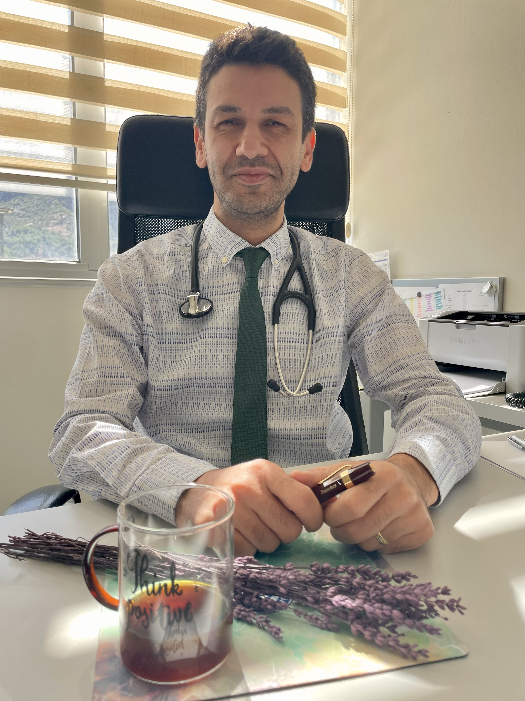

Tıbbi Onkoloji Uzmanı
Kanseri anlamak, süreci sadeleştirmek ve birlikte düşünmek için
Hakkımda

Tıp eğitimimi Hacettepe Üniversitesi'nde tamamladım. İç hastalıkları uzmanlığımı Ege Üniversitesi'nde aldıktan sonra, kanser tedavisinde yaşanan hızlı bilimsel gelişmeler ve bu yeniliklerin insan yaşamına doğrudan dokunabilme gücü beni onkoloji alanına yönlendirdi. Bu doğrultuda yan dal uzmanlık eğitimimi Ege Üniversitesi Tıbbi Onkoloji Bilim Dalı'nda tamamladım.
Mesleki pratiğimde özellikle hedefe yönelik akıllı tedaviler, immünoterapi ve güncel onkolojik yaklaşımlar üzerine yoğunlaşmaktayım. Bununla birlikte, kanser tedavisinin yalnızca tıbbi bir mücadele olmadığının bilinciyle; iletişimi, eşlik etmeyi ve sürecin insani tarafını da merkeze alıyorum.
Bu platformu, klinik pratiğin yanında bilgiyi sadeleştirmek, tıp tarihini görünür kılmak ve hasta ile yakınlarının deneyimine daha dikkatli bir dille eşlik edebilmek için oluşturdum.
Yazılar
Kanserin, hekimliğin ve tıbbi düşüncenin tarih boyunca geçirdiği dönüşümleri anlatan yazılar ve seri metinler.
Kemoterapi, immünoterapi, hedefe yönelik tedaviler ve sık karşılaşılan sorular üzerine sade, güvenilir ve anlaşılır açıklamalar.
Açıklamaktan çok eşlik etmeyi amaçlayan; tedavi sürecinin duygusal, gündelik ve insani yüklerine temas eden metinler.
Sanat, hastalığın sessiz bıraktığı her şeye ses verir. Muayene odasından resim, edebiyat ve sinemaya uzanan görünmez bir köprünün yazıları.
Podcast
Bazı yazılar, zaman içinde kısa sesli içerikler olarak da paylaşılacaktır. Amaç; bilgiyi yalnızca okunur değil, dinlenebilir hale de getirmek.
İletişim
Randevu
MHRS/Alo 182 ile randevu almakta güçlük yaşıyorsanız bu alanı kullanabilirsiniz.
RANDEVU ALGeri Bildirim
Süreçle ilgili düşüncelerinizi veya geri bildirimlerinizi öğrenmekten mutluluk duyarız.
GERİ BİLDİRİM